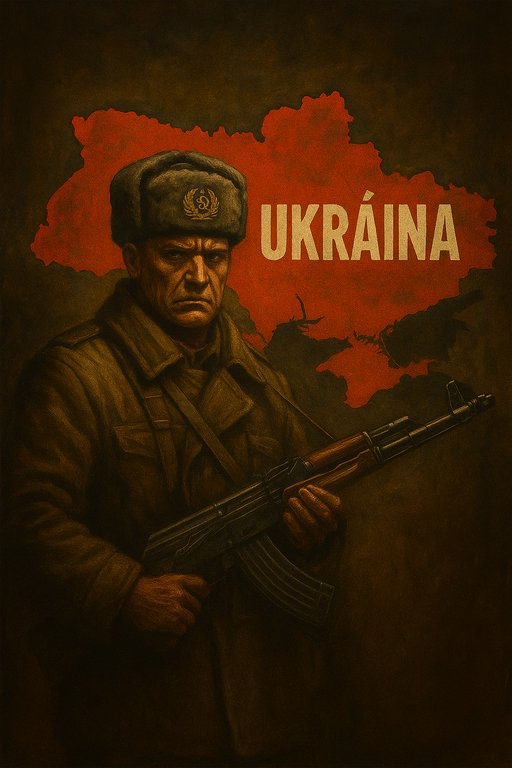

Publicado em 2025-05-26 07:37:06
Vladimir Putin acreditou que poderia tomar a Ucrânia em poucas semanas. Entrar com tanques, saudar com bandeiras, reinstalar uma marioneta no governo de Kiev e restaurar a ilusão da grandeza soviética.
Mas enganou-se.
Enganou-se profundamente.
Em vez de uma vitória rápida, encontrou uma muralha de dignidade.
Em vez de submissão, encontrou resistência.
E em vez de restaurar o império, lançou a Rússia numa espiral de desgaste, isolamento e exaustão.
A Ucrânia não é apenas uma peça de xadrez no tabuleiro pós-soviético. É uma nação forjada na dor, na fome, no sangue e na aspiração à liberdade.
É o povo do Holodomor. Da resistência a Estaline. Do Euromaidan. Do sonho europeu.
E por isso, cada quilómetro de avanço russo custa caro — não apenas em vidas, mas em tempo, reputação e viabilidade geopolítica.
Mesmo que consiga capturar mais território, a Rússia já perdeu:
A ideia de conquistar toda a Ucrânia é estratégica e logisticamente insustentável.
Estaria a Rússia preparada para ocupar, administrar e controlar 40 milhões de cidadãos hostis?
Para enfrentar sabotagens constantes, armamento ocidental avançado, e o risco real de envolver a NATO?
Putin pode ser teimoso, mas não é cego. E se o for, cairá com o seu império — como tantos outros déspotas na história.
A máquina de propaganda de Moscovo continua a dizer que “está tudo sob controlo”.
Mas no Kremlin, o dilema é brutal:
Donald Trump, curiosamente, acordou para essa realidade.
Disse agora que “Putin ficou louco” e que a conquista da Ucrânia levará à queda da própria Rússia.
Pode parecer contraditório vindo dele — mas desta vez, a frase ressoa como um alerta.
A guerra na Ucrânia tornou-se o espelho da alma russa contemporânea: ferida, orgulhosa, sedenta de passado e carente de visão.
A Rússia pode continuar a avançar em ruínas, mas cada passo será um fardo.
Porque quem tenta dominar uma nação que deseja ser livre, está, sem o saber, a cavar o seu próprio túmulo.
Artigo de Francisco Gonçalves
Imagem cortesia de OpenAI (c)